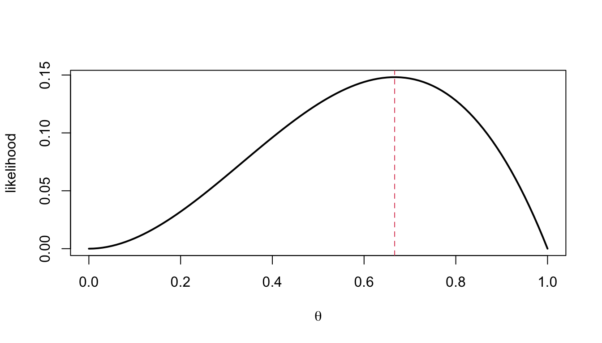
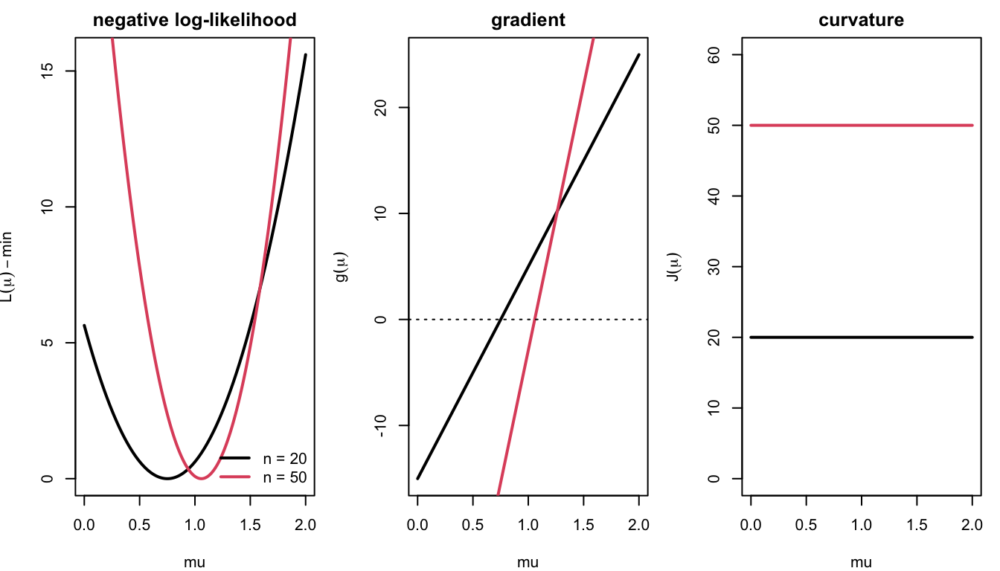
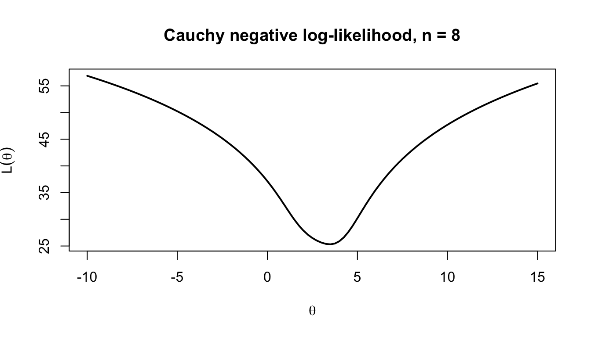
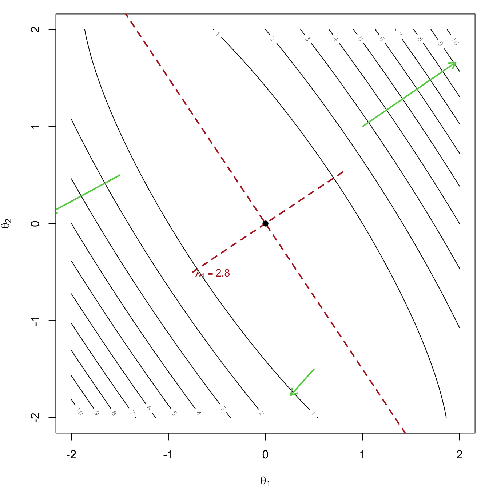
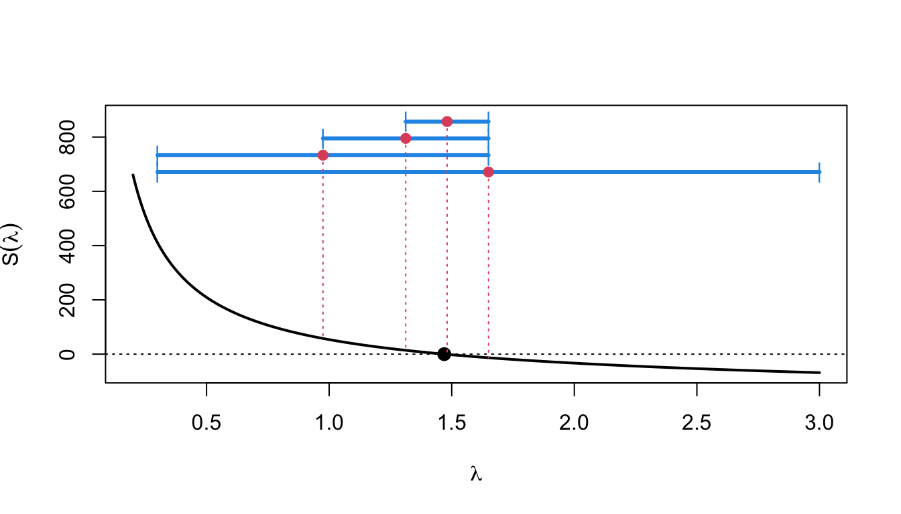
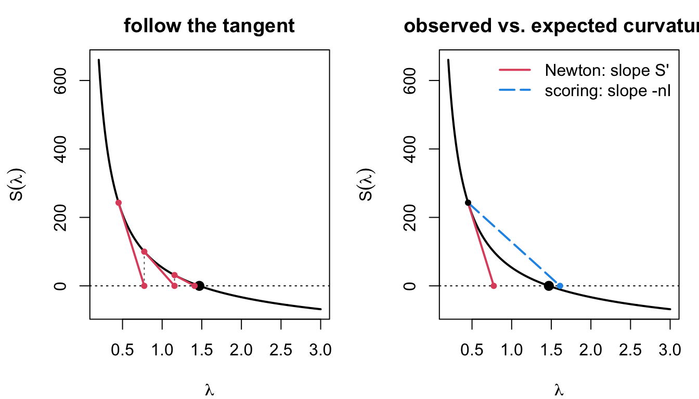
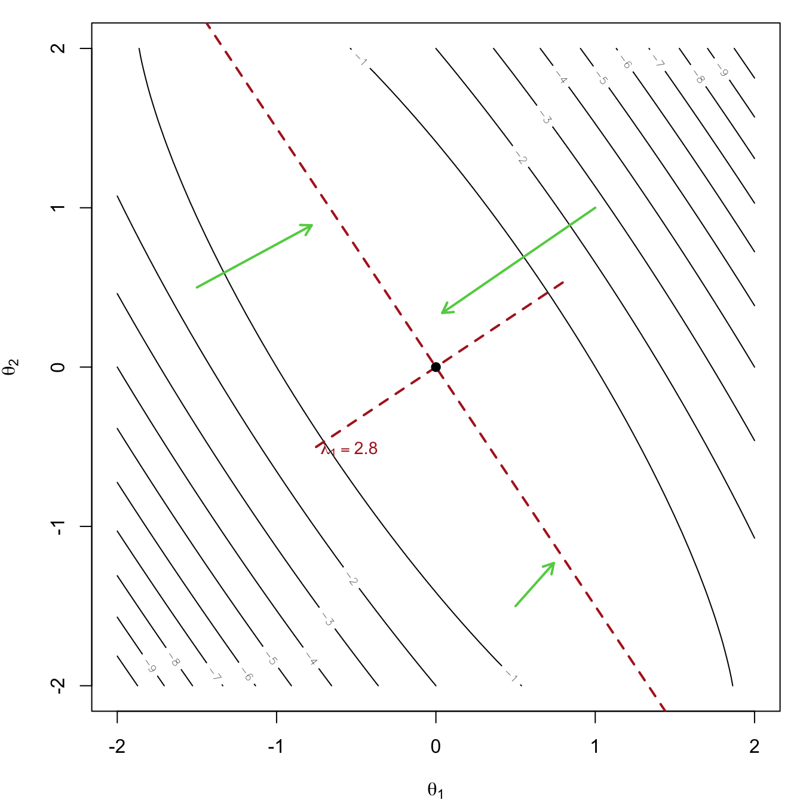
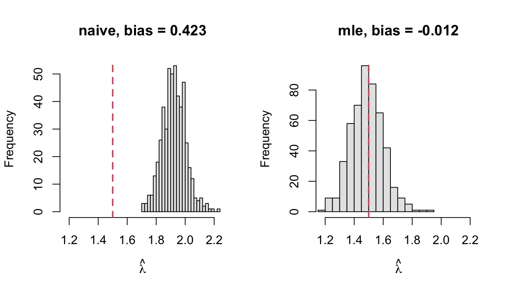
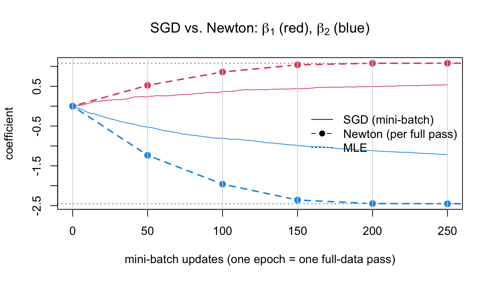

Elements of Statistical Computation
Optimization for Maximum Likelihood Estimation
Review: Likelihood Theory and MLE
Likelihood Function
A statistical model specifies the probability (density) of data \(D\) given a parameter \(\theta\): \(f(D \mid \theta)\).
As a function of \(D\) for fixed \(\theta\): the sampling distribution.
As a function of \(\theta\) for fixed (observed) \(D\): the likelihood function. \[ L(\theta; D) = f(D \mid \theta). \]
The likelihood measures how well each value of \(\theta\) explains the observed data. For iid data \(D = (x_1, \ldots, x_n)\), \[ L(\theta; D) = \prod_{i=1}^n f(x_i \mid \theta), \qquad \ell(\theta) = \log L(\theta; D) = \sum_{i=1}^n \log f(x_i \mid \theta). \]
We work with the log-likelihood \(\ell(\theta)\) to avoid underflow of the product and because sums are easier to differentiate.
Maximum Likelihood Estimator
\[ \hat\theta_{\mathrm{MLE}} = \arg\max_\theta L(\theta; D) = \arg\max_\theta \ell(\theta). \]
Example:
\(Y_1, Y_2, Y_3 \overset{iid}{\sim} \mathrm{Bern}(\theta)\), observed \(y = (1, 1, 0)\).
| \(\theta\) | \(P(1, 1, 0 \mid \theta) = \theta^2(1-\theta)\) |
|---|---|
| \(0\) | \(0\) |
| \(1/2\) | \(1/8 = 0.1250\) |
| \(2/3\) | \(4/27 = 0.1481\) (max) |
| \(3/4\) | \(9/64 = 0.1406\) |
| \(1\) | \(0\) |
Example: iid Bernoulli
\(P(y_i \mid \theta) = \theta^{y_i}(1-\theta)^{1-y_i}\), so with \(n_1 = \sum y_i\) and \(n_0 = n - n_1\), \[ L(\theta) = \theta^{n_1}(1-\theta)^{n_0}, \qquad \ell(\theta) = n_1\log\theta + n_0\log(1-\theta). \]
Score function \(S(\theta) = \ell'(\theta)\). The MLE solves the score equation \(S(\theta) = 0\): \[ S(\theta) = \frac{n_1}{\theta} - \frac{n_0}{1-\theta} = 0 \iff \hat\theta = \frac{n_1}{n} = \overline y. \]
Second derivative \(\ell''(\theta) = -\dfrac{n_1}{\theta^2} - \dfrac{n_0}{(1-\theta)^2} < 0\), so this is a maximum.
Example: Normal Mean with Known Variance
\(X_1, \ldots, X_n \overset{iid}{\sim} N(\mu, \sigma_0^2)\): \[ \ell(\mu) = -\frac{n}{2}\log(2\pi\sigma_0^2) - \frac{1}{2\sigma_0^2}\sum_{i=1}^n (x_i - \mu)^2 = C - \frac{n}{2\sigma_0^2}(\mu - \overline x)^2, \] using \(\sum(x_i - \mu)^2 = \sum(x_i - \overline x)^2 + n(\overline x - \mu)^2\). \[ S(\mu) = \frac{n}{\sigma_0^2}(\overline x - \mu) = 0 \implies \hat\mu = \overline x, \qquad -\ell''(\mu) = \frac{n}{\sigma_0^2}. \]
The log-likelihood is exactly quadratic in \(\mu\); the score is linear; the curvature is constant and grows with \(n\).
\(-\ell''\) measures how sharply the data pin down \(\mu\): it is the Fisher information.
Log-likelihood, Score and Curvature

The score crosses zero where \(\ell\) is maximized; larger \(n\) makes \(\ell\) more peaked, the score steeper, and \(-\ell''\) larger.
Example: Cauchy Location
\(X_1, \ldots, X_n \overset{iid}{\sim} \mathrm{Cauchy}(\theta)\), \(f(x \mid \theta) = \dfrac{1}{\pi\,[1 + (x-\theta)^2]}\): \[ \ell(\theta) = -n\log\pi - \sum_{i=1}^n \log\!\big(1 + (x_i - \theta)^2\big), \qquad S(\theta) = \sum_{i=1}^n \frac{2(x_i - \theta)}{1 + (x_i - \theta)^2}. \]
The score equation has no closed-form solution and may have several roots:
Code
xc <- rcauchy(8, location = 3)
llc <- function(th, dat) sapply(th, function(t) sum(dcauchy(dat, t, log = TRUE)))
curve(llc(x, xc), -10, 15, lwd = 2, xlab = expression(theta), ylab = expression(l(theta)), main = "Cauchy log-likelihood, n = 8")
This is why we need numerical optimization.
Properties of the MLE
Under regularity conditions (satisfied by most models in practice), for iid data with true parameter \(\theta_*\):
Consistency: \(\hat\theta_{\mathrm{MLE}} \to \theta_*\) as \(n \to \infty\).
Asymptotic normality: \[ \hat\theta_{\mathrm{MLE}} \;\dot\sim\; N\!\big(\theta_*,\ [n I(\theta_*)]^{-1}\big), \qquad I(\theta) = -E_X\!\left[\frac{\partial^2}{\partial\theta\,\partial\theta'}\log f(X \mid \theta)\right], \] the expected Fisher information per observation (\(p \times p\) for a \(p\)-dimensional \(\theta\)).
Asymptotic efficiency: no consistent estimator has smaller asymptotic variance (Cramér–Rao bound).
Note \(n I(\theta) = -E_D\big[\ell''(\theta; D)\big]\): the expected curvature of the log-likelihood.
Observed and Expected Fisher Information
\(\theta_*\) is unknown, so the variance \([nI(\theta_*)]^{-1}\) is estimated by plugging in \(\hat\theta\). Two versions:
Expected information \(n I(\hat\theta)\): requires computing \(E_X[\cdot]\) analytically.
Observed information \(J(\hat\theta) = -\ell''(\hat\theta; D) = -\sum_{i=1}^n \frac{\partial^2}{\partial\theta\partial\theta'}\log f(x_i \mid \hat\theta)\): the actual curvature at the MLE, no expectation needed.
By the LLN, \(J(\hat\theta)/n \approx I(\hat\theta)\). Both give \[ \widehat{\mathrm{Var}}(\hat\theta) \approx J(\hat\theta)^{-1} \quad\text{or}\quad [nI(\hat\theta)]^{-1}, \qquad \widehat{\mathrm{SE}}(\hat\theta_j) = \sqrt{\big[\widehat{\mathrm{Var}}(\hat\theta)\big]_{jj}} . \]
Computational consequence: the Hessian of \(\ell\) at the optimum, which Newton-type optimizers compute anyway, gives the standard errors for free.
Univariate Optimization
The Problem
Find \(\hat\theta\) maximizing \(\ell(\theta)\), \(\theta \in \mathbb{R}\). Equivalently, minimize \(f(\theta) = -\ell(\theta)\), or find a root of \(S(\theta) = \ell'(\theta)\).
Methods differ in what they need and how fast they converge:
| method | needs | convergence |
|---|---|---|
| fixed-point iteration | a rearrangement \(\theta = g(\theta)\) | linear, if at all |
| bisection | \(S(\theta)\) and a sign-changing bracket | linear (halves bracket) |
| golden section | \(\ell(\theta)\) only, and a bracket | linear |
| Newton–Raphson | \(S(\theta)\) and \(S'(\theta) = \ell''(\theta)\) | quadratic near root |
| Fisher scoring | \(S(\theta)\) and \(I(\theta)\) | linear–quadratic |
Running Example: Zero-Truncated Poisson
We observe only the nonzero counts of a Poisson process (\(X = Y \mid Y > 0\), \(Y \sim \mathrm{Pois}(\lambda)\)): \[ P(x \mid \lambda) = \frac{e^{-\lambda}\lambda^x}{x!}\cdot\frac{1}{1 - e^{-\lambda}}, \qquad x = 1, 2, \ldots \] \[ \ell(\lambda) = -n\lambda + \sum x_i \log\lambda - n\log(1 - e^{-\lambda}) + C \] \[ S(\lambda) = \frac{\sum x_i}{\lambda} - \frac{n}{1 - e^{-\lambda}} \] \[ S'(\lambda) = -\frac{\sum x_i}{\lambda^2} + \frac{n e^{-\lambda}}{(1 - e^{-\lambda})^2}. \]
Using \(E(X) = \dfrac{\lambda}{1 - e^{-\lambda}}\), \[ nI(\lambda) = -E[S'(\lambda)] = \frac{n}{\lambda(1 - e^{-\lambda})} - \frac{n e^{-\lambda}}{(1 - e^{-\lambda})^2}. \]
Zero-Truncated Poisson in R
Code
y <- rpois(200, 1.5); x <- y[y > 0]; n <- length(x); sx <- sum(x)
ll <- function(l) -n * l + sx * log(l) - n * log(1 - exp(-l))
S <- function(l) sx / l - n / (1 - exp(-l))
dS <- function(l) -sx / l^2 + n * exp(-l) / (1 - exp(-l))^2
nI <- function(l) n / (l * (1 - exp(-l))) - n * exp(-l) / (1 - exp(-l))^2
par(mfrow = c(1, 2), mar = c(4, 4, 2, 1))
curve(ll, 0.3, 4, lwd = 2, main = "log-likelihood", xlab = expression(lambda))
curve(S, 0.3, 4, lwd = 2, main = "score", xlab = expression(lambda)); abline(h = 0, lty = 3)
Code
c(naive_mean = mean(x), true_lambda = 1.5) naive_mean true_lambda
1.908537 1.500000 The plain sample mean overestimates \(\lambda\) because the zeros are missing; the MLE corrects for this.
Fixed-Point (Simple) Iteration
Rearrange \(S(\lambda) = 0\) into the form \(\lambda = g(\lambda)\): \[ \frac{\overline x}{\lambda} = \frac{1}{1 - e^{-\lambda}} \iff \lambda = \overline x\,(1 - e^{-\lambda}) =: g(\lambda). \]
Iterate \(\lambda_{k+1} = g(\lambda_k)\). Converges to a fixed point \(\lambda^* = g(\lambda^*)\) if \(|g'(\lambda^*)| < 1\); the error shrinks by the factor \(|g'(\lambda^*)|\) each step (linear convergence).
Code
fixed_point <- function(g, x0, tol = 1e-8, maxit = 500) {
for (k in 1:maxit) { x1 <- g(x0); if (abs(x1 - x0) < tol) return(c(root = x1, iter = k)); x0 <- x1 }
stop("not converged")
}
fixed_point(function(l) mean(x) * (1 - exp(-l)), x0 = mean(x)) root iter
1.469493 22.000000 Advantage: no derivatives. Disadvantage: a suitable \(g\) must be found, and convergence can be slow or fail.
Bisection
If \(S\) is continuous and \(S(a)\), \(S(b)\) have opposite signs, a root lies in \([a, b]\). Evaluate \(S\) at the midpoint and keep the half that still brackets the root.
Code
bisection <- function(S, a, b, tol = 1e-8) {
k <- 0
while (b - a > tol) { m <- (a + b) / 2; if (S(a) * S(m) <= 0) b <- m else a <- m; k <- k + 1 }
c(root = (a + b) / 2, iter = k)
}
bisection(S, 0.1, 10) root iter
1.469493 30.000000 Guaranteed to converge; the bracket halves each step, so \(\log_2\big((b-a)/\text{tol}\big) \approx 30\) iterations here.
Needs only \(S\), not \(S'\). R’s
uniroot()uses a refined version (Brent’s method).
Golden Section Search
Works on \(f(\theta) = -\ell(\theta)\) directly, without any derivative: keep a bracket \([a, b]\) containing the minimum of a unimodal \(f\) and two interior points \(a' < b'\) placed at the golden ratio (\(\phi \approx 0.618\)).
If \(f(a') < f(b')\) the minimum is in \([a, b']\); otherwise in \([a', b]\).
The golden ratio placement lets the surviving interior point be reused, so each step costs one new evaluation and shrinks the bracket by \(0.618\).
Code
golden <- function(f, a, b, tol = 1e-8) {
phi <- (sqrt(5) - 1) / 2; k <- 0
x1 <- b - phi * (b - a); x2 <- a + phi * (b - a); f1 <- f(x1); f2 <- f(x2)
while (b - a > tol) {
if (f1 < f2) { b <- x2; x2 <- x1; f2 <- f1; x1 <- b - phi * (b - a); f1 <- f(x1) }
else { a <- x1; x1 <- x2; f1 <- f2; x2 <- a + phi * (b - a); f2 <- f(x2) }
k <- k + 1 }
c(root = (a + b) / 2, iter = k)
}
golden(function(l) -ll(l), 0.1, 10) # R equivalent: optimize(function(l) -ll(l), c(0.1, 10)) root iter
1.469493 44.000000 Newton–Raphson: Derivation
Approximate the score by its tangent line at the current point \(\theta_k\) and solve for where the tangent hits zero: \[ S(\theta) \approx S(\theta_k) + S'(\theta_k)(\theta - \theta_k) = 0 \quad\Longrightarrow\quad \theta_{k+1} = \theta_k - \frac{S(\theta_k)}{S'(\theta_k)} = \theta_k - \frac{\ell'(\theta_k)}{\ell''(\theta_k)} . \]

Newton–Raphson: Interpretation as a Quadratic Model
Equivalently, approximate \(\ell\) by its second-order Taylor expansion at \(\theta_k\) and maximize that quadratic: \[ \ell(\theta) \approx \ell(\theta_k) + \ell'(\theta_k)(\theta - \theta_k) + \tfrac12 \ell''(\theta_k)(\theta - \theta_k)^2 . \]
For a quadratic \(\ell(\theta) = -a(\theta - u)^2 + C\) with \(a > 0\): \(\ell' = -2a(\theta - u)\), \(\ell'' = -2a\), so \[ \theta_{k+1} = \theta_k - \frac{-2a(\theta_k - u)}{-2a} = u \quad\text{in one step}. \]
\(-\ell''(\theta_k)^{-1}\) is the perfect step size for slope \(\ell'(\theta_k)\) when \(\ell\) is quadratic.
Log-likelihoods are approximately quadratic near the MLE (this is what asymptotic normality says), so Newton’s method is extremely fast there.
The normal-mean example is exactly quadratic: Newton converges in one step from anywhere.
Newton–Raphson in R
Code
newton <- function(S, dS, x0, tol = 1e-8, maxit = 100, trace = FALSE) {
for (k in 1:maxit) {
x1 <- x0 - S(x0) / dS(x0)
if (trace) cat(sprintf("iter %2d: %.10f\n", k, x1))
if (!is.finite(x1)) stop("diverged")
if (abs(x1 - x0) < tol) return(c(root = x1, iter = k))
x0 <- x1 }
stop("not converged")
}
newton(S, dS, x0 = mean(x), trace = TRUE)iter 1: 1.3636086724
iter 2: 1.4627922360
iter 3: 1.4694663017
iter 4: 1.4694927255
iter 5: 1.4694927259 root iter
1.469493 5.000000 Compare iteration counts: fixed point 22, bisection 30, golden 40, Newton just a handful.
Convergence Rate of Newton–Raphson
Let \(e_k = \theta_k - \hat\theta\). Expanding \(S(\hat\theta) = 0\) around \(\theta_k\): \[ 0 = S(\theta_k) - S'(\theta_k)e_k + \tfrac12 S''(\xi)e_k^2 \quad\Longrightarrow\quad e_{k+1} = e_k - \frac{S(\theta_k)}{S'(\theta_k)} = \frac{S''(\xi)}{2S'(\theta_k)}\,e_k^2 . \]
Quadratic convergence: the error is squared each step, so the number of correct digits roughly doubles. Linear methods (bisection, fixed point) gain a fixed number of digits per step.

When Newton–Raphson Fails
Newton uses only local information, so it can misbehave:
Wrong curvature: if \(\ell''(\theta_k) > 0\) (a convex region), the step moves toward a minimum or diverges.
Overshooting: a flat score (\(S'(\theta_k) \approx 0\)) gives a huge step.
Multiple roots: it converges to whichever root is nearest the start, possibly a local maximum.
Code
Sc <- function(t) sum(2 * (x_c - t) / (1 + (x_c - t)^2)) # Cauchy score
dSc <- function(t) sum(2 * ((x_c - t)^2 - 1) / (1 + (x_c - t)^2)^2)
x_c <- rcauchy(8, 3)
starts <- c(-5, 0, median(x_c), 8)
sapply(starts, function(s) tryCatch(newton(Sc, dSc, s)["root"], error = function(e) NA)) root root
NA NA 3.639364 9.881167 Even the well-behaved truncated Poisson overshoots from a poor start: at \(\lambda_0 = 3.5\) the score is flat, the step is huge, and the iterate goes negative.
Code
c(step_from_3.5 = 3.5 - S(3.5) / dS(3.5))step_from_3.5
-0.4278426 Code
tryCatch(newton(S, dS, 3.5), error = function(e) conditionMessage(e))[1] "diverged"Safeguards: start from a robust estimate (median for Cauchy), halve the step until \(\ell\) increases, or fall back to bisection/golden section, which only need a bracket.
Univariate Fisher Scoring
Replace the observed curvature \(-\ell''(\theta_k)\) by its expectation \(nI(\theta_k)\): \[ \theta_{k+1} = \theta_k + \frac{S(\theta_k)}{n I(\theta_k)} . \]
\(nI(\theta) > 0\) always, so the step is always in an ascent direction — more robust than Newton far from the optimum.
Near the MLE \(nI(\hat\theta) \approx -\ell''(\hat\theta)\), so the two methods behave alike.
Requires the expectation in closed form.
Code
fisher_scoring <- function(S, nI, x0, tol = 1e-8, maxit = 100) {
for (k in 1:maxit) { x1 <- x0 + S(x0) / nI(x0); if (abs(x1 - x0) < tol) return(c(root = x1, iter = k)); x0 <- x1 }
}
rbind(newton = newton(S, dS, 3), fisher = fisher_scoring(S, nI, 3)) root iter
newton 1.469493 8
fisher 1.469493 5Standard Error from the Curvature
At the MLE \(\hat\lambda\), the observed information \(J(\hat\lambda) = -\ell''(\hat\lambda) = -S'(\hat\lambda)\) and the expected information \(nI(\hat\lambda)\) both estimate the precision:
Code
lhat <- newton(S, dS, mean(x))["root"]
c(mle = lhat, se_observed = 1 / sqrt(-dS(lhat)), se_expected = 1 / sqrt(nI(lhat))) mle.root se_observed.root se_expected.root
1.4694927 0.1108998 0.1108998 Code
lhat + c(-1.96, 1.96) / sqrt(-dS(lhat)) # 95% Wald interval[1] 1.252129 1.686856Numerical Derivatives
When \(S\) or \(S'\) is tedious to derive, approximate by finite differences: \[ \ell'(\theta) \approx \frac{\ell(\theta + h) - \ell(\theta - h)}{2h}, \qquad \ell''(\theta) \approx \frac{\ell(\theta + h) - 2\ell(\theta) + \ell(\theta - h)}{h^2}. \]
\(h\) too large: truncation error; \(h\) too small: roundoff error (large − large). Typical choice \(h \approx \sqrt{\epsilon}\,(1 + \lvert\theta \rvert) \approx 10^{-8}\) for the first derivative, \(\epsilon^{1/3}\) for the second.
R’s
nlm()andoptim(method = "BFGS")use numerical gradients unless you supply analytic ones;numDeriv::grad()andhessian()are more accurate.
Code
h <- 1e-5
c(analytic = dS(lhat), numeric = (ll(lhat + h) - 2 * ll(lhat) + ll(lhat - h)) / h^2)analytic.root numeric.root
-81.30895 -81.30911 Multivariate Newton–Raphson and Fisher Scoring
Gradient and Hessian
For \(\theta = (\theta_1, \ldots, \theta_p)'\), the gradient (score vector) and Hessian are \[ \nabla\ell(\theta) = \begin{pmatrix}\partial\ell/\partial\theta_1 \\ \vdots \\ \partial\ell/\partial\theta_p\end{pmatrix}, \qquad \nabla^2\ell(\theta) = \left(\frac{\partial^2\ell}{\partial\theta_i\,\partial\theta_j}\right)_{p\times p} . \]
\(\nabla\ell\) points in the direction of steepest ascent and is perpendicular to the contour through \(\theta\).
\(\nabla^2\ell\) describes the local curvature. At a local maximum it is negative semidefinite; if it is negative definite, the maximum is strict and locally unique. Near a maximum, \(\ell\) is well approximated by a quadratic, so the Hessian determines the shape of the contours.
Gradient and Hessian: Illustration
Quadratic: \(\ell(\theta) = -\tfrac12(\theta - u)'A(\theta - u)\), \(A\) positive definite, \(\nabla\ell = -A(\theta - u)\), \(\nabla^2\ell = -A\) (constant). Contours are ellipses centred at \(u\). Write \(A = Q\Lambda Q'\):
- axes point along the eigenvectors of \(Q\);
- half-length along axis \(j\) is \(\propto 1/\sqrt{\lambda_j}\), so a large eigenvalue means high curvature and a short, well-determined direction;
- \(\lambda_{\max}/\lambda_{\min}\) measures elongation; tilted ellipses indicate correlated parameters.
- Gradient arrows (green) are perpendicular to contours and point uphill, but not toward \(u\) unless the ellipse is a circle.
- Near its maximum any smooth \(\ell\) looks like this, with \(A = -\nabla^2\ell(\hat\theta)\).

Multivariate Newton–Raphson
Second-order Taylor expansion at \(\theta_k\), maximized exactly: \[ \ell(\theta) \approx \ell(\theta_k) + \nabla\ell(\theta_k)'(\theta - \theta_k) + \tfrac12(\theta - \theta_k)'\nabla^2\ell(\theta_k)(\theta - \theta_k) \] \[ \Longrightarrow\quad \underbrace{\theta_{k+1}}_{p\times1} = \theta_k - \underbrace{\big[\nabla^2\ell(\theta_k)\big]^{-1}}_{p\times p}\underbrace{\nabla\ell(\theta_k)}_{p\times1}. \]
Compare with the univariate \(\theta_{k+1} = \theta_k - \ell'(\theta_k)/\ell''(\theta_k)\): division becomes multiplication by the inverse Hessian.
Fisher scoring replaces \(-\nabla^2\ell(\theta_k)\) by the expected information \(nI(\theta_k)\): \[ \theta_{k+1} = \theta_k + \big[nI(\theta_k)\big]^{-1}\nabla\ell(\theta_k). \]
Each iteration costs one \(p \times p\) linear solve — \(O(p^3)\) — fine for \(p\) in the hundreds, expensive for \(p\) in the millions.
Example: Logistic Regression
\(y_i \mid x_i \sim \mathrm{Bern}(\pi_i)\) with \(\pi_i = \dfrac{e^{\eta_i}}{1 + e^{\eta_i}} = \dfrac{1}{1 + e^{-\eta_i}}\), \(\eta_i = x_i'\beta\), \(x_i = (1, x_{i1}, \ldots, x_{ip})'\). \[ L(\beta) = \prod_{i=1}^n \pi_i^{y_i}(1-\pi_i)^{1-y_i} = \prod_{i=1}^n \frac{e^{y_i\eta_i}}{1 + e^{\eta_i}} \] \[ \ell(\beta) = \sum_{i=1}^n \big[y_i\,x_i'\beta - \log(1 + e^{x_i'\beta})\big]. \]
Using \(\dfrac{\partial}{\partial\beta}\log(1 + e^{x_i'\beta}) = \pi_i x_i\) and \(\dfrac{\partial\pi_i}{\partial\beta} = \pi_i(1-\pi_i)x_i\): \[ \nabla\ell(\beta) = \sum_{i=1}^n (y_i - \pi_i)\,x_i = X'(y - \pi), \qquad \] \[ \nabla^2\ell(\beta) = -\sum_{i=1}^n \pi_i(1-\pi_i)\,x_i x_i' = -X'WX, \text{with}~W = \mathrm{diag}\big(\pi_i(1-\pi_i)\big) \] .
Logistic Regression: Newton = Fisher Scoring = IRLS
\(-\nabla^2\ell = X'WX\) is positive semi-definite, so \(\ell\) is concave: any stationary point is the global maximum.
The Hessian does not involve \(y\), so its expectation equals itself: Newton–Raphson and Fisher scoring coincide.
The update \[ \beta_{k+1} = \beta_k + (X'W_kX)^{-1}X'(y - \pi_k) = (X'W_kX)^{-1}X'W_k z_k, \] \[ z_k = X\beta_k + W_k^{-1}(y - \pi_k), \] is a weighted least squares fit of the working response \(z_k\): iteratively reweighted least squares (IRLS), which is how
glm()fits all generalized linear models.Caveat: if the classes are perfectly separable, \(\ell\) increases forever and the MLE does not exist (\(\lvert\hat\beta\rvert \to \infty\)).
Logistic Regression in R
Code
n <- 500; X <- cbind(1, rnorm(n), rnorm(n)); beta_true <- c(-0.5, 1, -2)
y <- rbinom(n, 1, plogis(X %*% beta_true))
loglik <- function(b) sum(y * (X %*% b) - log1p(exp(X %*% b)))
grad <- function(b) crossprod(X, y - plogis(X %*% b))
hess <- function(b) { p <- plogis(X %*% b); -crossprod(X, X * drop(p * (1 - p))) }
newton_mv <- function(grad, hess, b0, tol = 1e-8, maxit = 50) {
path <- drop(b0)
for (k in 1:maxit) {
b1 <- b0 - solve(hess(b0), grad(b0)); path <- rbind(path, drop(b1))
if (max(abs(b1 - b0)) < tol)
return(list(est = drop(b1), iter = k, se = sqrt(diag(solve(-hess(b1)))), path = path))
b0 <- b1 }
}
fit <- newton_mv(grad, hess, rep(0, 3)); fit$iter[1] 7Code
rbind(newton = fit$est, glm = coef(glm(y ~ X[, -1], family = binomial))) (Intercept) X[, -1]1 X[, -1]2
newton -0.5431413 1.080382 -2.453254
glm -0.5431413 1.080382 -2.453254Code
rbind(newton = fit$se, glm = sqrt(diag(vcov(glm(y ~ X[, -1], family = binomial))))) (Intercept) X[, -1]1 X[, -1]2
newton 0.1337429 0.1511637 0.2228005
glm 0.1337429 0.1511637 0.2228005Variance of the MLE \(\hat\beta\)
\[ \widehat{\mathrm{Var}}(\hat\beta) = \big[-\nabla^2\ell(\hat\beta)\big]^{-1} = (X'\hat WX)^{-1} = \begin{pmatrix}\hat\sigma_{00} & \cdots & \hat\sigma_{0p} \\ \vdots & \ddots & \vdots \\ \hat\sigma_{p0} & \cdots & \hat\sigma_{pp}\end{pmatrix}, \] \[ \widehat{\mathrm{SE}}(\hat\beta_j) = \sqrt{\hat\sigma_{jj}} . \]
Wald tests and confidence intervals follow directly: \[ z_j = \frac{\hat\beta_j}{\widehat{\mathrm{SE}}(\hat\beta_j)} \;\dot\sim\; N(0,1) \text{ under } H_0: \beta_j = 0, \qquad \hat\beta_j \pm 1.96\,\widehat{\mathrm{SE}}(\hat\beta_j). \]
This is the summary(glm(...)) table. The variance comes from the same Hessian that drove the Newton iterations.
Other Multivariate Optimization Methods
Nelder–Mead (Simplex Method)
Maintains a simplex of \(p+1\) points (a triangle in 2D) and moves it downhill using only function values:
Order the vertices \(f(\theta_{(1)}) \le \cdots \le f(\theta_{(p+1)})\); let \(\overline\theta\) be the centroid of the best \(p\).
Reflect the worst vertex through \(\overline\theta\); if the reflected point is the new best, try expanding further.
If reflection is poor, contract toward \(\overline\theta\); if that also fails, shrink all vertices toward the best.
Code
rosen <- function(v) (1 - v[1])^2 + 100 * (v[2] - v[1]^2)^2 # Rosenbrock "banana", min at (1, 1)
nm <- optim(c(-1.2, 1), rosen, method = "Nelder-Mead"); c(nm$par, evals = nm$counts["function"]) evals.function
1.000260 1.000506 195.000000 Robust and derivative-free (R’s optim default), but slow in high dimensions and offers no standard errors.
Gradient Descent with Line Search
Move in the direction of steepest descent \(d_k = -\nabla f(\theta_k)\), choosing the step length \(\alpha_k\) by a line search: \[ \theta_{k+1} = \theta_k + \alpha_k d_k, \qquad \alpha_k = \arg\min_{\alpha > 0} f(\theta_k + \alpha d_k) . \]
Exact line search: a univariate minimization (golden section /
optimize) along the ray.Inexact (backtracking, Armijo): start with \(\alpha = 1\) and halve until \(f(\theta_k + \alpha d_k) \le f(\theta_k) + c\,\alpha\,\nabla f(\theta_k)'d_k\) (a “sufficient decrease”).
Code
grad_descent <- function(f, gr, x0, maxit = 1000, tol = 1e-8) {
path <- x0
for (k in 1:maxit) {
d <- -gr(x0); a <- optimize(function(a) f(x0 + a * d), c(0, 10))$minimum # exact line search
x1 <- x0 + a * d; path <- rbind(path, x1)
if (sqrt(sum((x1 - x0)^2)) < tol) break
x0 <- x1 }
list(par = x1, iter = k, path = path)
}Why Gradient Descent Zig-Zags
With exact line search, consecutive directions are orthogonal (\(\nabla f(\theta_{k+1})'d_k = 0\)), so on elongated contours the path zig-zags across the valley:

The number of iterations grows with the condition number of the Hessian (ratio of largest to smallest eigenvalue).
Conjugate Gradient
Fix the zig-zag by making each new direction conjugate to the previous ones with respect to the Hessian \(Q\): \(d_i'Qd_j = 0\) for \(i \ne j\). For a quadratic \(f(\theta) = \tfrac12\theta'Q\theta - b'\theta\), minimizing along \(p\) such directions reaches the exact minimum in at most \(p\) steps.
The nonlinear version builds directions from gradients only: \[ d_0 = -g_0, \qquad d_{k+1} = -g_{k+1} + \beta_k d_k, \qquad \] \[ \beta_k^{FR} = \frac{g_{k+1}'g_{k+1}}{g_k'g_k}\ \text{(Fletcher–Reeves)}, \quad \beta_k^{PR} = \frac{g_{k+1}'(g_{k+1} - g_k)}{g_k'g_k}\ \text{(Polak–Ribière)}, \] with \(\theta_{k+1} = \theta_k + \alpha_k d_k\) from a line search and \(g_k = \nabla f(\theta_k)\).
Memory: only two vectors. No matrix ever formed. Ideal for very large \(p\).
Restart with \(d = -g\) every \(p\) iterations, since conjugacy degrades on non-quadratic \(f\).
Conjugate Gradient in R
Code
conj_grad <- function(f, gr, x0, maxit = 1000, tol = 1e-8, restart = length(x0)) {
g0 <- gr(x0); d <- -g0; path <- x0
for (k in 1:maxit) {
a <- optimize(function(a) f(x0 + a * d), c(0, 10))$minimum
x1 <- x0 + a * d; g1 <- gr(x1); path <- rbind(path, x1)
if (sqrt(sum(g1^2)) < tol) break
beta <- if (k %% restart == 0) 0 else max(0, sum(g1 * (g1 - g0)) / sum(g0^2)) # Polak-Ribiere+
d <- -g1 + beta * d; x0 <- x1; g0 <- g1 }
list(par = x1, iter = k, path = path)
}
cg <- conj_grad(fq, gq, c(2, -1.8))
par(pty = "s", mar = c(4, 4, 2, 1)); contour(seq(-2, 2, l = 80), seq(-2, 2, l = 80), -z, nlevels = 15, main = sprintf("conjugate gradient, %d iterations", cg$iter))
lines(gd$path, type = "b", col = 2, pch = 19, cex = 0.6); lines(cg$path, type = "b", col = 4, pch = 19, lwd = 2)
legend("topleft", c("gradient descent", "conjugate gradient"), col = c(2, 4), lwd = 2, bty = "n")
Quasi-Newton: BFGS
Between gradient methods and Newton: build an approximation \(B_k \approx \nabla^2 f\) from successive gradient differences \(s_k = \theta_{k+1} - \theta_k\), \(y_k = g_{k+1} - g_k\), via a rank-two update that keeps \(B_k\) positive definite. Steps are \(d_k = -B_k^{-1}g_k\) with a line search.
Code
negll <- function(b) -loglik(b); neggr <- function(b) -drop(grad(b))
fits <- list(NM = optim(rep(0, 3), negll, method = "Nelder-Mead"),
CG = optim(rep(0, 3), negll, neggr, method = "CG"),
BFGS = optim(rep(0, 3), negll, neggr, method = "BFGS", hessian = TRUE))
t(sapply(fits, function(f) c(f$par, f_evals = f$counts[1], g_evals = f$counts[2]))) f_evals.function g_evals.gradient
NM -0.5430514 1.080459 -2.453567 130 NA
CG -0.5431413 1.080382 -2.453254 61 22
BFGS -0.5431413 1.080382 -2.453255 36 13Code
sqrt(diag(solve(fits$BFGS$hessian))) # SEs from the numerically computed Hessian at the optimum[1] 0.1337429 0.1511637 0.2228005optim(..., hessian = TRUE) returns a finite-difference Hessian at the solution, so standard errors are available even for gradient-only methods.
Stochastic Gradient Descent
Motivation: Large \(n\)
For iid data the log-likelihood and its gradient are sums over observations: \[ \ell(\theta) = \sum_{i=1}^n \ell_i(\theta), \qquad \nabla\ell(\theta) = \sum_{i=1}^n \nabla\ell_i(\theta). \]
Every method so far needs the full gradient, an \(O(np)\) pass through all data, per iteration (and Newton needs \(O(np^2)\) for the Hessian). With \(n\) in the millions and \(p\) in the millions (neural networks), even one full gradient is expensive.
Idea. \(\nabla\ell_i(\theta)\) for a randomly chosen \(i\) is an unbiased estimate of the average gradient: \[ E_i\big[\nabla\ell_i(\theta)\big] = \frac{1}{n}\nabla\ell(\theta). \]
A noisy but cheap gradient estimate is enough to make progress — a Monte Carlo idea applied to optimization.
The SGD Algorithm
For \(t = 1, 2, \ldots\):
Sample an index \(i_t\) uniformly from \(\{1, \ldots, n\}\) (or shuffle the data and cycle through it; one pass is an epoch).
Update in the ascent direction of that single observation’s log-likelihood: \[ \theta_{t+1} = \theta_t + \gamma_t\,\nabla\ell_{i_t}(\theta_t). \]
Mini-batch SGD averages the gradient over a batch \(B_t\) of \(m\) observations (\(m = 32\)–\(512\) typical): \[ \theta_{t+1} = \theta_t + \gamma_t\,\frac{1}{m}\sum_{i\in B_t}\nabla\ell_i(\theta_t), \] reducing the variance by \(1/m\) at \(m\) times the cost, and using vectorized/GPU arithmetic.
The learning rate \(\gamma_t\) replaces the line search (a line search would need full-data evaluations).
Learning Rate and Convergence
Because the gradient is noisy, a constant \(\gamma\) makes \(\theta_t\) bounce around the optimum with variance \(\propto \gamma\). Robbins–Monro (1951): convergence to the optimum is guaranteed if \[ \sum_t \gamma_t = \infty \quad\text{and}\quad \sum_t \gamma_t^2 < \infty, \qquad\text{e.g. } \gamma_t = \frac{\gamma_0}{1 + t/t_0} . \]
\(\gamma\) too large: divergence or persistent noise. \(\gamma\) too small: painfully slow.
Convergence is only sublinear, far slower than Newton per iteration — but each iteration costs \(O(p)\) instead of \(O(np)\), and early progress is fast.
Common refinements: momentum (average past gradients), Adam (per-coordinate adaptive rates), averaging the iterates \(\overline\theta_T = \frac1T\sum_t\theta_t\) (Polyak–Ruppert), which restores the \(\sqrt n\)-efficiency of the MLE.
SGD for Logistic Regression in R
Code
sgd <- function(X, y, b0, gamma0 = 0.05, t0 = 200, epochs = 5, batch = 10) {
n <- nrow(X); b <- b0; t <- 0; path <- b0
for (e in 1:epochs) {
idx <- sample(n)
for (s in seq(1, n, by = batch)) {
i <- idx[s:min(s + batch - 1, n)]; t <- t + 1
g <- crossprod(X[i, , drop = FALSE], y[i] - plogis(X[i, , drop = FALSE] %*% b)) / length(i)
b <- b + gamma0 / (1 + t / t0) * g; path <- rbind(path, drop(b)) } }
list(est = drop(b), path = path)
}
sg <- sgd(X, y, rep(0, 3))
rbind(sgd = sg$est, newton = fit$est, truth = beta_true) [,1] [,2] [,3]
sgd -0.2569113 0.5378873 -1.217143
newton -0.5431413 1.0803821 -2.453254
truth -0.5000000 1.0000000 -2.000000SGD Trajectory vs. Newton

Newton needed 7 full-data passes; SGD made 250 cheap updates over 5 epochs and lands near the MLE with residual noise.
Per data pass, Newton is far more efficient here (\(n = 500\), \(p = 3\)); SGD earns its keep when one full gradient — or the \(O(p^3)\) Hessian solve — is prohibitively expensive.
Summary
| needs | strength | weakness | |
|---|---|---|---|
| bisection / golden section | bracket | always converges | 1-D only, linear |
| Newton–Raphson | \(\nabla\ell\), \(\nabla^2\ell\) | quadratic convergence, SEs from Hessian | can diverge; \(O(p^3)\) |
| Fisher scoring / IRLS | \(\nabla\ell\), \(I(\theta)\) | positive-definite steps; GLMs | needs expectations |
| Nelder–Mead | \(\ell\) | derivative-free | slow, small \(p\) |
| gradient descent / CG / BFGS | \(\nabla\ell\) | scales to large \(p\) | line search; ill-conditioning |
| SGD | \(\nabla\ell_i\) | scales to large \(n\) and \(p\) | noisy, tuning of \(\gamma_t\) |
The log-likelihood is approximately quadratic near the MLE (asymptotic normality); every method above exploits that, and its curvature at the optimum delivers the standard errors.